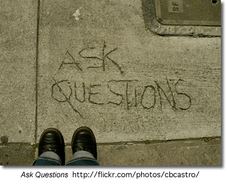

Asking Good Questions
Questions may be the most powerful technology we have ever created" says Jamie McKenzie, author of Beyond Technology: Questioning, Research and the Information Literate School.
In an information and technology rich world it is easy for students to cut and paste the information they find for their fact-based assignments and projects. High School teacher-librarian, Joyce Valenza asks, with basic information so easy to access, shouldn't we now focus our students attention on questions that will challenge them to use information meaningfully - to think, analyze, evaluate and invent?"
Before students can start to ask good questions they need to see it modeled by their teachers. Tips for Teachers: Asking Good Questions, provides some questioning strategies that provoking high-level thinking. Jamie Mackenzie's Questioning Toolkit describes the many different types of questions that can be introduced as early as kindergarten to enable students to have powerful questioning technologies and techniques with them as they arrive in high school.
San Bonito High School's What I Want to Find Out: Questions, describes the difference between 'thin' and 'thick' questions and provides examples of how to turn a thin question into a fat one.
Creating Essential Questions outlines the key components of essential questions
Not All Questions are Created Equal
In his presentation handout, Designing Research Projects that Kids (and Teachers) Love, Doug Johnson outlines four levels of questions.
Questioning Flow (pdf) - a series of questions for middle and high school students to use when reading a selected passage.
Good Questions
The following examples of questions addressing each level are based on Doug Johnson's Good Questions hand-out from his presentation handout, Designing Research Projects that Kids (and Teachers) Love
Level One Question
My research is about a broad topic. I can complete the assignment by using a general reference source such as an encyclopedia.
Example: My research is about the causes of the genocide in Rwanda.
Level Two Question
My research answers a question that helps me narrow the focus of my search. The question may mean that I need to go to various sources to gather enough information to get a reliable answer. The conclusion of the research will ask me to give a supported answer to the question.
Example: Why was Romeo Dallaire unable to inform the world about the genocide in Rwanda?
Level Three Question
My research answers a question of personal relevance. To answer this question I may need to consult not just secondary sources such as magazines, newspapers, books or the Internet, but use primary sources of information such as original surveys, interviews, or source documents.
Example: How did the atrocities of the Rwanda genocide affect Constable xxxx, of North Battleford, during and after his time as a member of the Canadian Peacekeeping forces in Rwanda?
Level Four Question
My research answers a personal question about the topic, and contains information that may be of use to decision-makers as they make policy or distribute funds. The result of my research is a well-supported conclusion that contains a call for action on the part of an organization or government body. There will be a plan to distribute this information.
Example: The Genocide Convention defines genocide as "acts committed with intent to destroy, in whole or in part, a national, ethical, racial or religious group". Since the genocide in Rwanda ethic killings have taken place in Darfur in the Sudan. How might curricular and extra-curricular activities be utilized to motive students at NBCHS to lobby governments to take action and protect global citizens against such evil?